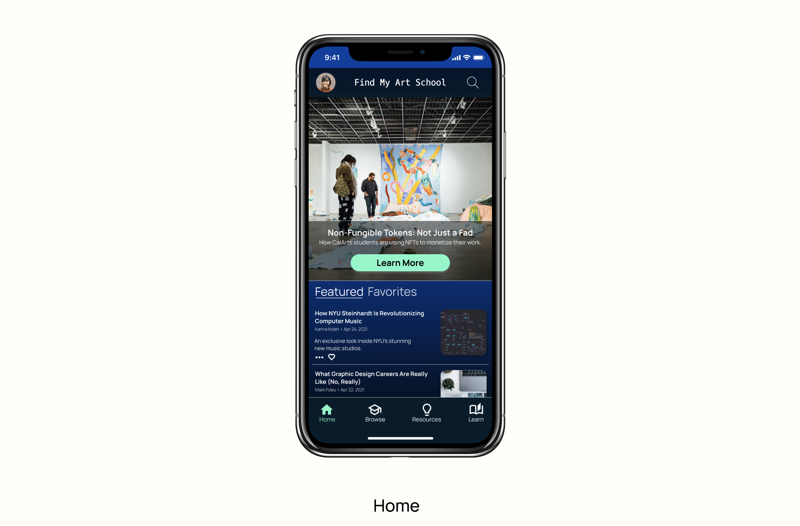

Find My Art School
The world needs artists and designers. Find the right art school.
Overview
Product: Find My Art School is an app that provides valuable resources to art school applicants, helping them find the right program. Art and technology are not mutually exclusive, so the app has a strong emphasis on STEAM (science, technology, engineering, art, and mathematics). Users can:
- Browse and learn about art- and design-focused colleges and programs.
- Read curated blog articles to keep up with the latest ongoings in the field.
- Use resources to boost their portfolios.
- Find and connect with mentors.
- Take certificate courses via a partnership with Kadenze, a creative technology education platform.
Problem: Universities offer a plethora of art programs and courses for students, while conventional college finder/ranking sites do not provide enough information about specialized art programs and schools.
Goal: Design an app for prospective art school applicants to find out about the right program for them as well as leverage resources to strengthen their college applications and skillsets.
My Role: Sole UX designer designing the app from conception to prototype.
Project Duration: 12 weeks (March 2021—May 2021)
User Experience Research
I conducted five interviews and created empathy maps to understand the users I designed for and their needs. A primary user group identified through research was students/young adults interested in applying to art school but unsure of programs and schools to which to apply.
Users discussed the plethora of programs offered by art colleges and universities today, but the lack of specific resources for students to get in-depth insights about art schools and difficulty making informed decisions about applying to them.
- Uncertainty: Potential applicants are unsure about whether to apply to art schools and/or programs to which to apply.
- Lack of resources: Potential applicants want more resources to ensure effective applications and learn about schools and programs in which they might be interested.
- Guidance: Potential applicants feel lost and want a sense of communitv or mentorship in their art school journeys.
Personas
Based on primary research, I developed three personas to represent different groups of users: RJ Lee, Bill Forrest, and Ece Akkan. While each of their journeys is unique, they have one thing in common: each of them wants to find the right art school and/or program.
User Journey Map
I created a user journey map to outline a path depicting how a typical user might use Find My Art School. Crafting this map was helpful for me to put myself in the user’s shoes by trying to understand their emotions while using Find My Art School and in what order they would potentially navigate through the app’s features.
Competitive Audit
I conducted a competitive audit to identify who Find My Art School’s competitors might be, what is working for them and what isn’t. I identified three competitors: Niche, Kadenze, and US News Best Colleges. None of these services offers what Find My Art School does.
Niche has a much broader target audience, which includes college applicants to all kinds of disciplines, not just art schools. Additionally, Niche includes information on only American colleges, whereas Find My Art School has an international scope. Kadenze, like Find My Art School, emphasizes STEAM curricula but is a massive open online course (MOOC)/creative education platform; US News Best Colleges focuses mainly on college rankings.
Both US News Best Colleges and Niche club art schools into more general categories (e.g., fine arts and contemporary art programs are often put into the same category), unlike Find My Art School, which helps users get a more detailed look at art colleges to find the right program, even the more "niche" (no pun intended) ones.
View full competitive audit.Crazy eights
To quickly come up with a host of ideas, I performed the “Crazy Eights” ideation exercise, producing eight ideas in eight minutes.
Storyboarding
To paint a clearer picture of how users would interact with the platform, I created a storyboard, putting myself in the persona, RJ Lee’s shoes. RJ, who was previously conflicted and overwhelmed when it came to choosing and applying to art schools, leverages the resources on the Find My Art School app to boost his confidence and bolster his art school application.
Panel 1: RJ wants to apply to art schools but is confused/overwhelmed by all the information online.
Panel 2: He finds and downloads the Find My Art School app.
Panel 3: After quickly signing up, he takes a brief tutorial on all the app’s features.
Panel 4: RJ searches and browses programs/colleges with the help of filters.
Panel 5: RJ avails of resources on the app and finds and connects with a mentor.
Panel 6: By leveraging the resources on Find My Art School, RJ is now feeling confident and will soon be ready to apply!
Information Architecture: Sitemap.
I developed a sitemap to organize and clarify content for the site, emphasizing menus and navigation that would allow users to have an exploratory experience. I categorized the app navigation into four main categories: home, browse, resources, and learn.
Wireframes
I sketched out paper wireframes.

Using my paper wireframes as a reference, I drew up a set of digital wireframes that I could use as the basis for the Find My Art School prototype.

Low-fidelity Prototype
I created a low-fidelity prototype, marking out the pathways, navigation, and interaction available to users. The app experience is meant to be exploratory rather than linear, which is reflected by the flexibility of the “back and forth” style pathways featured in this low-fi prototype.
Usability Testing
With a lo-fi prototype in hand, it was now time to conduct a usability test to see how real users would experience the app.
- Study Type: Moderated usability study/concept test
- Location: United States and India; remote
- Participants: five (5)
- Length: ~30 minutes
- UX research plan: Created a UX research plan consisting of project background, research goals, research questions. key performance indicators (KPIs) to be assessed, methodology, participant criteria, and script/discussion guide.
- Usability study: After a screener survey, conducted a remote moderated usability study on five participants: three art school applicants, one alumnus, and two current students. all based in either India or the US, between the ages of 18 and 40 years.
- Analysis: During the study, I guided and observed participants, and made detailed notes. After the study, I measured key performance indicators (KPIs)—system usability scale (SUS) and net promoter score (NPS).
- Synthesis and iteration: Synthesized results by creating a report identifying themes, pain points, and strengths, and started to make an affinity diagram with research insights. I refined my wireframes and low-fi prototype accordingly.
During the moderated usability study, I took detailed notes and observed users’ behaviour using an observation sheet ("1" represents whether participants performed the corresponding behavior under observation):
I then created a visual representation of useful insights from users in the form of quotes and categorized them (similar to an affinity diagram).
Revised Wireframe and User Flow

- User onboarding part 1: onboarding screens
I created four onboarding screens to show users what they can do on the app. The onboarding screens will appear before the sign-up process so users do not have to ‘commit’ before beginning to use Find My Art School.
- User onboarding part 2: onboarding questions
I created three questions (one per screen) to learn about users, including their preferred location, degree choices, and their areas of interest. The app would tailor relevant content based on their preferences.
- Search via map
Users can search for colleges on a map, providing a fun, interactive way to engage with the app, and learn more about the schools they are interested in and their surrounding neighbourhoods.
Key Mockups
Armed with a modified low-fidelity prototype, I created a logo and mockups of the app’s screens: 
High-fidelity Prototype
Building on the screen mockups, I designed a high-fidelity prototype of the app, depicting the app’s main features and functionalities. In addition to the more standard interactions, the prototype features an interactive map to search for schools and a VR "mode" for users to check out college campuses in more detail.
Reflection & Takeaways
Find My Art School was a challenging and rewarding project. Through practising design thinking, I sharpened my UX design skills and empathized with users. Well-planned user research and testing resulted in successful iterations and improved designs. By creating features like an interactive map and integrating a VR-like experience into the app, I took my design skills to the next level.
Thanks for checking out this project. I welcome feedback.
Back to top